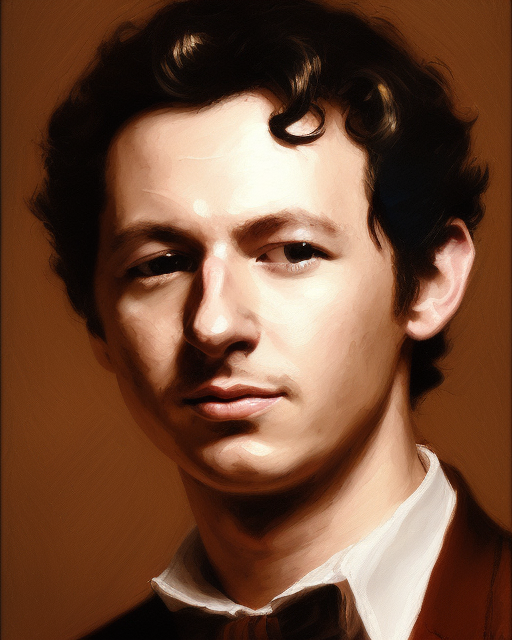

My name is Vincent Riggi; I am a research scientist at the Rensselaer Astrobiology Research and Education (RARE) center. My research is focused primarily on the early steps of creating life from prebiotic environments. This includes synthesis of simple reduced carbon compunds, polymerization and condensation of biomolecules, and simulation of extreme environments in the lab.

Research Topics
- Abiotic Carbon Reduction and Organic Synthesis
- RNA Polymerization
- Hydrothermal Experimental Methodology
Recent Publications
- Riggi, V. S., Watson, E. B., Steele, A., & Rogers, K. L. (2023). Mineral-Mediated Oligoribonucleotide Condensation: Broadening the Scope of Prebiotic Possibilities on the Early Earth. Life, 13(9), 1899.
- Steele, A., Benning, L. G., Wirth, R., Schreiber, A., Araki, T., McCubbin, F. M., ... & Rogers, K. (2022). Organic synthesis associated with serpentinization and carbonation on early Mars. Science, 375(6577), 172-177.
- Riggi, V. S. (2019). Constraining Prebiotic RNA Oligomerization in the Context of Hadean-Archaean Environments (Publication No. 13857056) [Doctoral dissertation, Rensselaer Polytechnic Institute]. ProQuest Dissertations & Theses Global.
- MORE...
Education
- Ph.D., Rensselaer Polytechnic Institute (2019), Geology.
- B.S., Rensselaer Polytechnic Institute (2015), Geology.